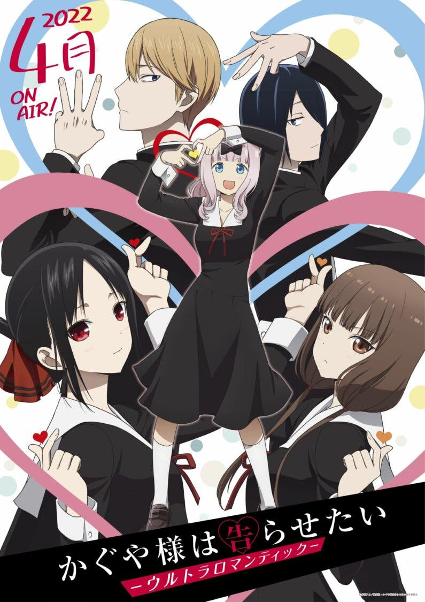

ANIME KAGUYA-SAMA: LOVE IS WAR SEASON 3 CHỐT LỊCH PHÁT HÀNH
 11/3/2024 08:44
11/3/2024 08:44

Bên cạnh ngày phát hành, các thông tin khác về Kaguya-sama: Love Is War - Ultra Romantic cũng được hé lộ, bao gồm visual chính thức và PV đặc biệt dài gần 10 phút. Mới đây, tựa anime chuyển thể Kaguya-sama: Love Is War season 3 đã công bố thêm thông tin mới, xác nhận phim sẽ lên sóng vào tháng 4 năm 2022, tức nằm trong danh sách anime mùa xuân.
Tên chính thức của phần anime này là Kaguya-sama: Love Is War - Ultra Romantic. Visual chính thức của phim đã được hé lộ, kèm theo đó là đoạn teaser kéo dài gần 10 phút!
DIỄN VIÊN LỒNG TIẾNG
- Aoi Koga vào vai Kaguya Shinomiya
- Makoto Furukawa vào vai Miyuki Shirogane
- Konomi Kohara vào vai Chika Fujiwara
- Ryota Suzuki vào vai Yu Ishigami
- Yuki Takada vào vai Rei Onodera
- Miyu Tomita vào vai Miko Iino
- Yumiri Hanamori vào vai Ai Hayasaka
- Momo Asakura vào vai Nagisa Kashiwagi
- Rina Hidaka vào vai Kobachi Osaragi
- Taku Yashiro vào vai el novio de Kashiwagi
- Yutaka Aoyama vào vai el Narrador
ĐỘI NGŨ SẢN XUẤT
Nuevamente, el anime será producido por el estudio A-1 Pictures. La mayoría del personal que participó en las anteriores temporadas retorna a sus respectivas posiciones:
- Mamoru Hatakeyama (Đạo diễn)
- Yasuhiro Nakanishi (giám sát kịch bản)
- Yūko Yahiro (Thiết kế nhân vật)
- Takayuki Kidou (Thiết kế hậu kỳ)
- Risa Wakabayashi (Giám đốc nghệ thuật)
- Kanako Hokari (Họa sĩ phối màu)
- Yuki Kuribayashi (Giám đốc CGI)
- Masaharu Okazaki (đạo diễn hình ảnh)
- Rie Matsubara (Editor)
- Kei Haneoka (Âm thanh)
- Jin Aketagawa (Giám đốc âm thanh)
GIỚI THIỆU VỀ KAGUYA-SAMA LOVE IS WAR
Kaguya-sama: Love Is War - Kaguya-sama Wa Kokurasetai: Tensai-tachi No Renai Zunousen hay Cuộc Chiến Tỏ Tình là tựa anime chuyển thể từ manga rom-com (tình cảm hài hước) cùng tên do Akasaka Aka sáng tác. Tác phẩm xoay quanh chuyện tình éo le giữa Kaguya Shinomiya và Miyuki Shirogane. Vì bản tính hiếu thắng, cả hai - dù rất thích nhau - nhưng lại không muốn tỏ tình trước và luôn tìm cách để người kia chủ động "ra tay". Câu chuyện tình éo le của Kaguya-sama: Love Is War đã nhận được sự đón nhận vô cùng tích cực từ khán giả. Anime Kaguya-sama: Love Is War season 2 thậm chí lọt TOP anime của năm 2021. Với tên gọi Kaguya-sama: Love Is War - Ultra Romantic, chắc chắn phần anime thứ 3 này sẽ đem đến những câu chuyện cực kỳ thú vị! Hãy cùng chờ đến tháng 4 năm sau để xem anime nhé!